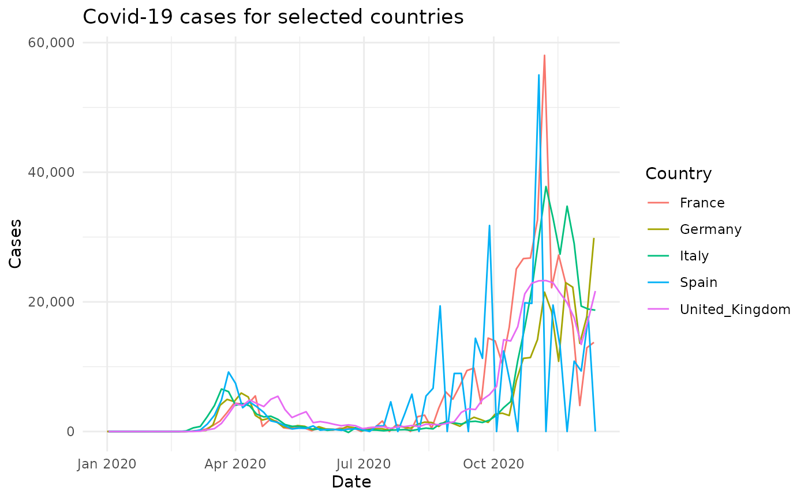

Reported COVID-19 infections, and deaths, collected and collated by the European Centre for Disease Prevention and Control (ECDC, provided by day and country). Data were collated and published up to 14th December 2020, and have been tidied so they are easily usable within the `tidyverse` of packages.
Usage
data(covid19)Format
Tibble with seven columns
- date_reported
The date cases were reported
- contient
A `factor` for the geographical continent in which the reporting country is located.
- countries_and_territories
A `factor` for the country or territory reporting the data.
- countries_territory_code
A `factor` for the a three-letter country or territory code.
- population_2019
The reported population of the country for 2019, taken from Eurostat for Europe and the World Bank for the rest of the world.
- cases
The reported number of positive cases.
- deaths
The reported number of deaths.
Details
Data sourced from European Centre for Disease Prevention and Control which is available under the open licence, compatible with the CC BY 4.0 license, further details available at ECDC.
Examples
data(covid19)
library(dplyr)
library(ggplot2)
library(scales)
# Create a plot of the performance for England over time
covid19 |>
filter(countries_and_territories ==
c("United_Kingdom", "Italy", "France", "Germany", "Spain")) |>
ggplot(aes(
x = date_reported,
y = cases,
col = countries_and_territories
)) +
geom_line() +
scale_color_discrete("Country") +
scale_y_continuous(labels = comma) +
labs(
y = "Cases",
x = "Date",
title = "Covid-19 cases for selected countries",
alt = "A plot of covid-19 cases in France, Germany, Italy, Spain & the UK"
) +
theme_minimal()
